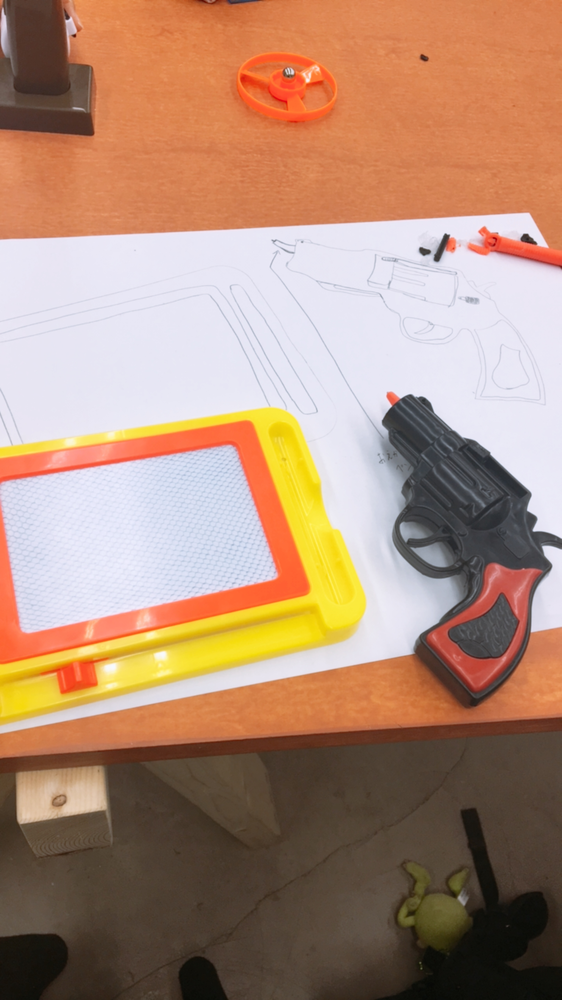

toy hacking
100円ショップにあるおもちゃを使って別の機能に変える授業
私はおもちゃの銃と絵やお絵かきセットを買いました。
最初は、何を作るか全然浮かばなくて悪戦苦闘したけれどロケットペンを参考に銃の引き金を引いたらペンが出てきて絵が描けるというものを作ろうと思った。
銃を解体しようとバラしたら100円だが複雑な作りになっていて構造を知れました。ペンをくっつけて最初は引き金を引いたらロケットペンのように飛び出ていたけれど数回しかできずにペンが飛んでいってしまいました。
反省点は飛び出さないようにある留め具を外さないとペンがつけられないのでそこをテープで止めたので何度もできなかったと思います。
